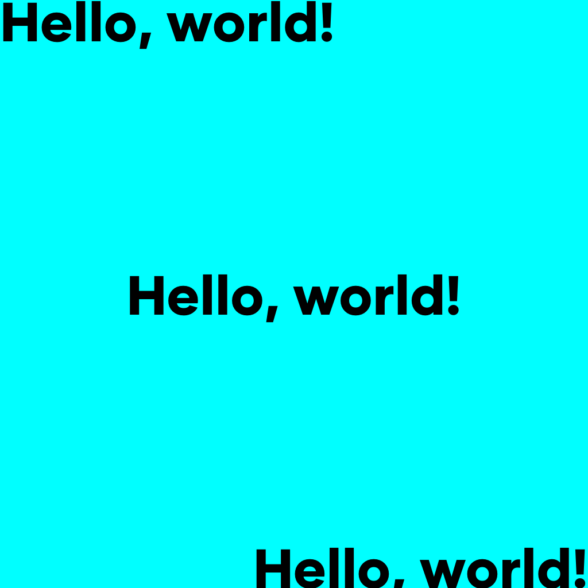
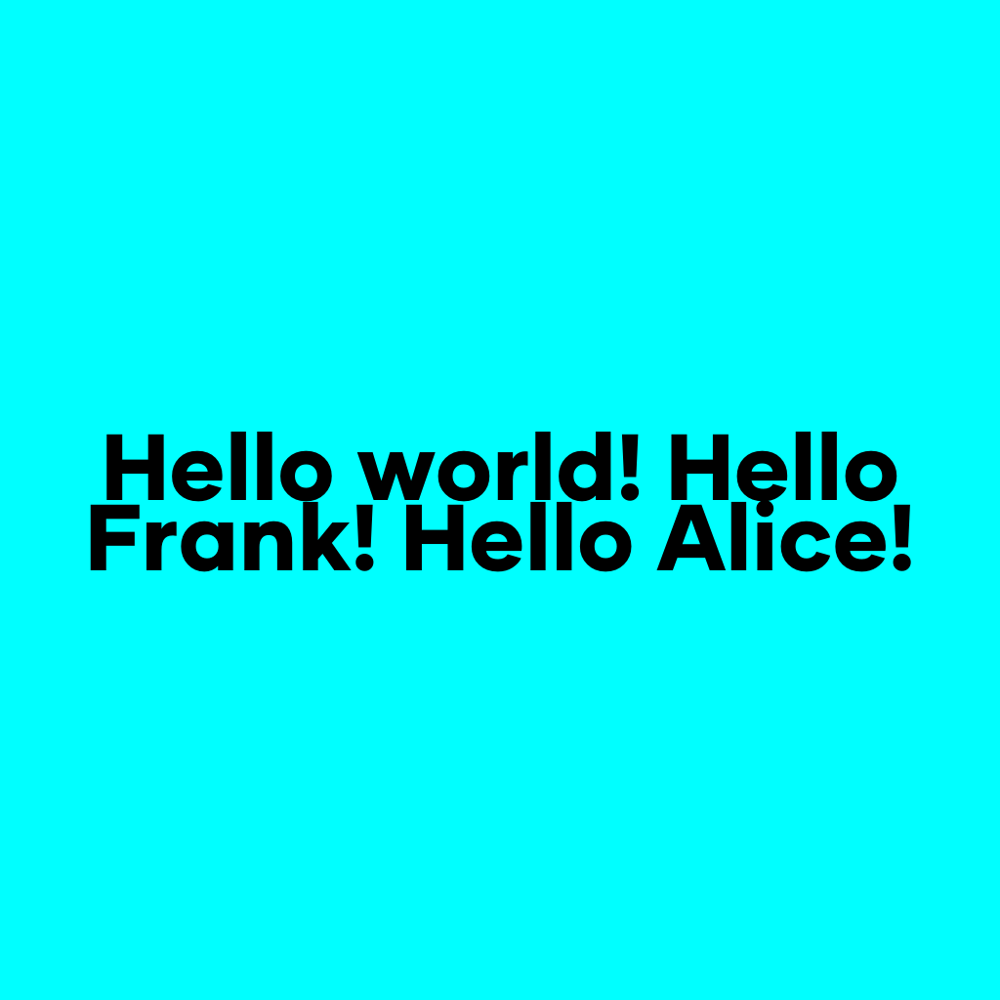
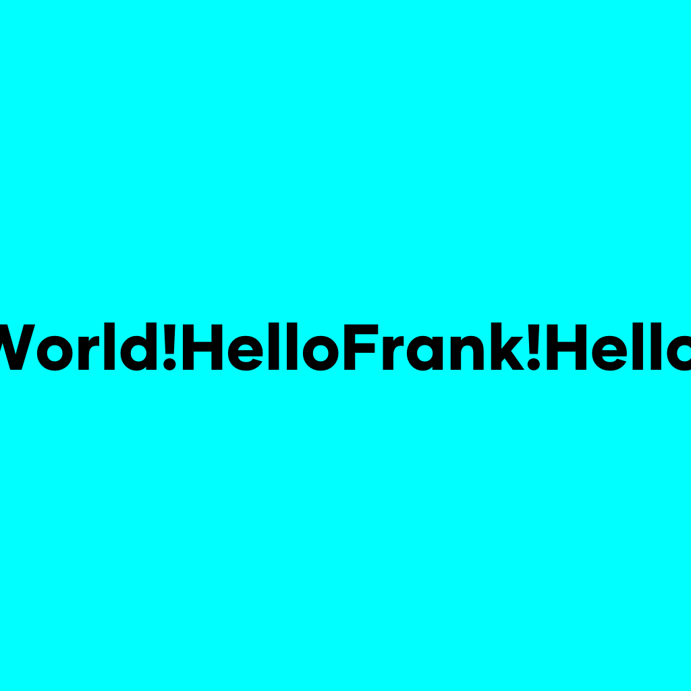
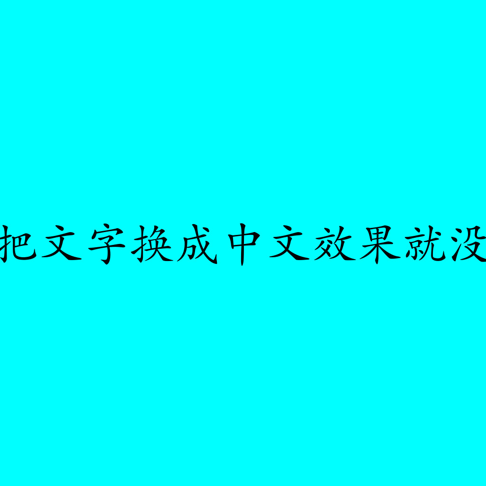
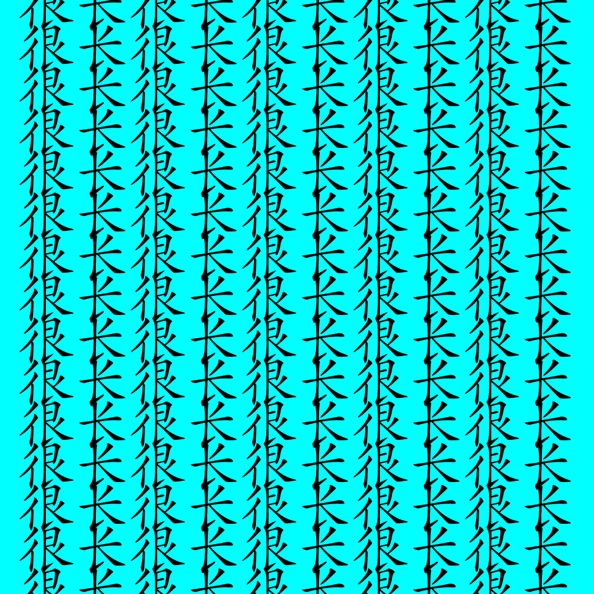
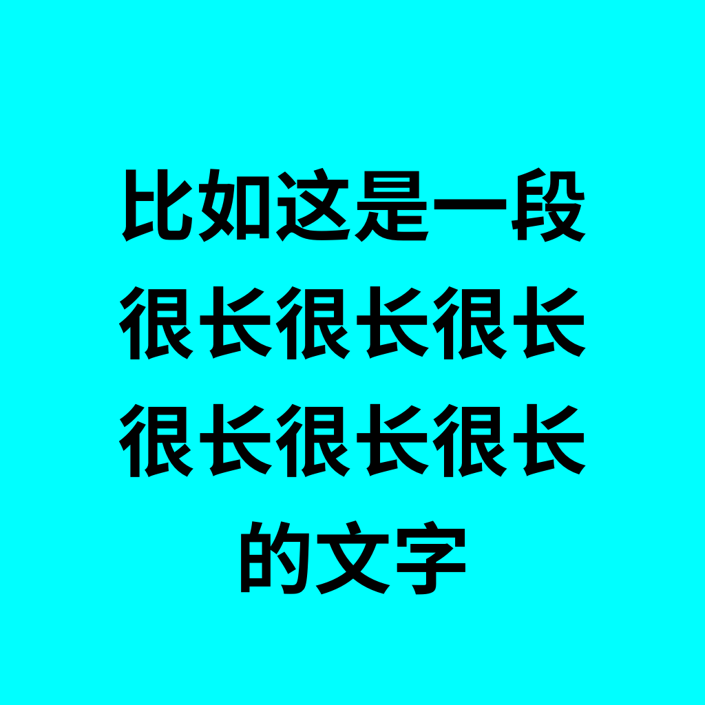
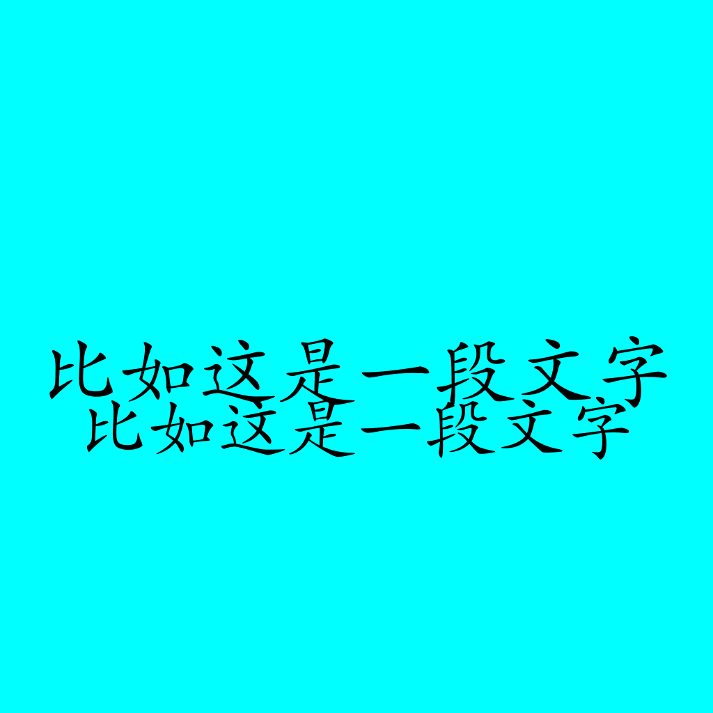

这一篇将继续介绍gg库中绘制文字相关的方法，主要包括：DrawStringAnchored()、DrawStringWrapped()、MeasureMultilineString()、WordWrap()下面来分别进行介绍。
DrawStringAnchored
如果不细究，可能会觉得这个方法是 DrawString() 方法的一个封装，但看看里面的实现就能发现，实际情况正好相反。
// DrawString draws the specified text at the specified point.
func (dc *Context) DrawString(s string, x, y float64) {
dc.DrawStringAnchored(s, x, y, 0, 0)
}
// DrawStringAnchored draws the specified text at the specified anchor point.
// The anchor point is x - w * ax, y - h * ay, where w, h is the size of the
// text. Use ax=0.5, ay=0.5 to center the text at the specified point.
func (dc *Context) DrawStringAnchored(s string, x, y, ax, ay float64) {
w, h := dc.MeasureString(s)
x -= ax * w
y += ay * h
if dc.mask == nil {
dc.drawString(dc.im, s, x, y)
} else {
im := image.NewRGBA(image.Rect(0, 0, dc.width, dc.height))
dc.drawString(im, s, x, y)
draw.DrawMask(dc.im, dc.im.Bounds(), im, image.ZP, dc.mask, image.ZP, draw.Over)
}
}DrawStringAnchored() 方法主要有5个参数，第一个参数是要绘制的字符串，后面四个参数共同决定了锚点的位置，具体计算逻辑是(x - w * ax, y - h * ay)，所以，当ax、ay设置为0时就是左对齐，此时锚点位置处于文字框左下角；设置为0.5时就是居中，此时锚点位置处于文字框正中央；设置为1时就是右对齐，此时锚点位置处于文字控右上角。
我们来看下效果：
func TestDrawStringAnchored(t *testing.T){
const S = 1024
dc := gg.NewContext(S, S)
dc.SetRGB(1, 1, 1)
dc.Clear()
dc.SetRGB(0, 0, 0)
if err := dc.LoadFontFace("gilmer-heavy.ttf", 96); err != nil {
panic(err)
}
dc.DrawStringAnchored("Hello, world!", 0, dc.FontHeight(), 0, 0)
dc.DrawStringAnchored("Hello, world!", S/2, S/2, 0.5, 0.5)
dc.DrawStringAnchored("Hello, world!", S, S-dc.FontHeight(), 1, 1)
dc.SavePNG("out.png")
}
这里需要注意的就是锚点的位置，当左对齐时，锚点在左下角，所以设置的 (0, dc.FontHeight()) 代表的是文字框左下角的位置，同理，当居中对齐时，(S/2, S/2) 代表的是文字框中心点的位置，右对齐时，(S, S-dc.FontHeight()) 代表的是文字框右上顶点的位置。
DrawStringWrapped
这个方法可以比较方便的绘制多行文字，还能自动折行，基本上相当于真正文字框的效果。
先看个例子简单的熟悉一下：
func TestDrawStringWrapped(t *testing.T){
const S = 1024
dc := gg.NewContext(S, S)
dc.SetRGB(1, 1, 1)
dc.Clear()
dc.SetRGB(0, 0, 0)
if err := dc.LoadFontFace("gilmer-heavy.ttf", 96); err != nil {
panic(err)
}
dc.DrawStringWrapped("Hello world! Hello Frank! Hello Alice!", S/2, S/2, 0.5, 0.5, S, 1, gg.AlignCenter)
dc.SavePNG("out.png")
}绘制的效果如下：

可以看到，不仅自动换行，而且还保持了单词的完整性，没有将一个单词从中间分割开来。
这个方法的参数有点多，一共有8个参数。
第1个参数代表的是要绘制的字符串，比如这里的Hello world! Hello Frank! Hello Alice!。第6个参数代表文本框的宽度。第7个参数代表行间距。
第2～5和第8个参数共同决定了锚点的位置。这里的计算比之前稍微复杂一点，让我们来看看里面的具体实现：
// DrawStringWrapped word-wraps the specified string to the given max width
// and then draws it at the specified anchor point using the given line
// spacing and text alignment.
func (dc *Context) DrawStringWrapped(s string, x, y, ax, ay, width, lineSpacing float64, align Align) {
lines := dc.WordWrap(s, width)
// sync h formula with MeasureMultilineString
h := float64(len(lines)) * dc.fontHeight * lineSpacing
h -= (lineSpacing - 1) * dc.fontHeight
x -= ax * width
y -= ay * h
switch align {
case AlignLeft:
ax = 0
case AlignCenter:
ax = 0.5
x += width / 2
case AlignRight:
ax = 1
x += width
}
ay = 1
for _, line := range lines {
dc.DrawStringAnchored(line, x, y, ax, ay)
y += dc.fontHeight * lineSpacing
}
}首先通过 WordWrap() 方法来得到根据指定宽度处理过后的每一行需要展示的字符串信息。
lines := dc.WordWrap(s, width)然后计算行高，这里计算的时候是用行数乘以字体高度再乘以行间距，得到结果后再减去一个行间距。所以这个 lineSpacing 的含义是行间距相对于字体高度的倍数，当 lineSpacing 设置为1时，也就是行间距为0，设置为1.1时，代表行间距为字体高度的0.1倍。
h := float64(len(lines)) * dc.fontHeight * lineSpacing
h -= (lineSpacing - 1) * dc.fontHeight然后是有点绕的计算。
x -= ax * width
y -= ay * h
switch align {
case AlignLeft:
ax = 0
case AlignCenter:
ax = 0.5
x += width / 2
case AlignRight:
ax = 1
x += width
}
ay = 1
for _, line := range lines {
dc.DrawStringAnchored(line, x, y, ax, ay)
y += dc.fontHeight * lineSpacing
}可以看到，整体逻辑是先计算好首行文字的锚点位置，然后对处理过的每个字符串调用 DrawStringAnchored() 方法进行最终文字绘制。我们可以从下往上看，在循环绘制之前，先设置了 ay = 1，也就是说锚点的偏移位置会在每一行的顶部，然后我们来看这个ax：
switch align {
case AlignLeft:
ax = 0
case AlignCenter:
ax = 0.5
x += width / 2
case AlignRight:
ax = 1
x += width
}根据传入的最后一个参数的不同值，ax 会设置为不同的值。当最后一个参数分别为 AlignLeft、AlignCenter、AlignRight时，ax 和 ay 的组合分别为：(0,1)、(0.5,1)、(1,1)，锚点相对于单行文字的位置分别为左上顶点、上中位置、右上顶点。
然后我们再来看这个 y 的值：
y -= ay * hy 的初始位置为传入的 y 值减去 ay (y轴偏移) 乘以整体文本框高度，代表的含义是初始锚点(x,y)相对于文本框的位置，分别传入0、0.5、1时分别代表锚点处于文本框的上边线、正中线和下边线上。在循环绘制文字时，y 的值也会不断调整，代表单行文字的锚点位置也在不断变化。
y += dc.fontHeight * lineSpacing最后来看下 x 的值，初始值为初始锚点相对于传入的文本框宽度的相对位置，ax 分别为 0、0.5、1 时，分别代表初始锚点位于整体文本框的左边线、居中竖线和右边线上。
x -= ax * width根据传入的最后一个参数的不同，又会对x进行一次调整，这样调整之后，便能实现文字在文本框中左对齐、居中和右对齐的效果了。
switch align {
case AlignLeft:
ax = 0
case AlignCenter:
ax = 0.5
x += width / 2
case AlignRight:
ax = 1
x += width
}看起来确实挺好用，不用再操心换行的事情了。但别高兴的太早，有一点需要注意。这个方法只会根据空格来分割字符串，如果字符串没有空格，就会变成只有一行文字的效果。
dc.DrawStringWrapped("HelloWorld!HelloFrank!HelloAlice!", S/2, S/2, 0.5, 0.5, S, 1, gg.AlignCenter)
你可能会觉得，英文单词之间都会有空格的嘛，应该不用担心，但如果是中文呢？
if err := dc.LoadFontFace("/Users/bytedance/Downloads/font/方正楷体简体.ttf", 96); err != nil {
panic(err)
}
dc.DrawStringWrapped("如果我们把文字换成中文效果就没那么好了", S/2, S/2, 0.5, 0.5, S, 1, gg.AlignCenter)
另外，这个方法不会限制文本框整体高度，所以如果文本很长，即使可能正确换行，仍旧会超出图片范围。
dc.DrawStringWrapped("比如这是一段很长很长 很长很长很长很长很长 很长很长很长很长很长 很长很长很长很长很长 很长很长很长很长很长 很长很长很长很长很长 很长很长很长很长很长 很长很长很长很长很长 很长很长很长很长很长 很长很长很长很长很长 很长很长很长很长很长 很长很长很长很长很长 很长很长很长很长很长 很长很长很长很长很长 很长很长很长很长很长 很长很长很长很长很长 的文字", S/2, S/2, 0.5, 0.5, S, 1, gg.AlignCenter)
另外，它是按照空格进行词元素分割的，所以不会从单词的中间进行拆分，这既是优点，也是缺点。因为如果有长单词的话，可能会导致提前换行，让某些行看起来比其它行短很多。所以要想精确控制，还是得用笨办法。
MeasureMultilineString
MeasureMultilineString() 方法可以测量多行文本的整体高度和宽度，需要传入用换行符分割好的文本行字符串和行间距，里面的计算逻辑也很简单。
func (dc *Context) MeasureMultilineString(s string, lineSpacing float64) (width, height float64) {
lines := strings.Split(s, "\n")
// sync h formula with DrawStringWrapped
height = float64(len(lines)) * dc.fontHeight * lineSpacing
height -= (lineSpacing - 1) * dc.fontHeight
d := &font.Drawer{
Face: dc.fontFace,
}
// max width from lines
for _, line := range lines {
adv := d.MeasureString(line)
currentWidth := float64(adv >> 6) // from gg.Context.MeasureString
if currentWidth > width {
width = currentWidth
}
}
return width, height
}行高的计算跟上面DrawStringWrapped()方法是一样的：
h := float64(len(lines)) * dc.fontHeight * lineSpacing
h -= (lineSpacing - 1) * dc.fontHeight宽度则是取这些文本行中宽度最大的那个。
WordWrap
这个方法是用来处理文本的，负责对文本根据指定宽度进行分行，在 DrawStringWrapped() 方法中已经有所调用。它内部是调用wordWrap()函数来实现的。
// WordWrap wraps the specified string to the given max width and current
// font face.
func (dc *Context) WordWrap(s string, w float64) []string {
return wordWrap(dc, s, w)
}wordWrap() 函数做的事情便是先将文字按换行符分割，然后对每一个子字符串按空格进行分割，再通过一个元素一个元素的拼接来判断出适合当前行宽的最大字符串。
func wordWrap(m measureStringer, s string, width float64) []string {
var result []string
for _, line := range strings.Split(s, "\n") {
fields := splitOnSpace(line)
if len(fields)%2 == 1 {
fields = append(fields, "")
}
x := ""
for i := 0; i < len(fields); i += 2 {
w, _ := m.MeasureString(x + fields[i])
if w > width {
if x == "" {
result = append(result, fields[i])
x = ""
continue
} else {
result = append(result, x)
x = ""
}
}
x += fields[i] + fields[i+1]
}
if x != "" {
result = append(result, x)
}
}
for i, line := range result {
result[i] = strings.TrimSpace(line)
}
return result
}需要注意的点
otf 字体文件加载
前面的内容中，加载字体文件都使用的是 LoadFontFace() 方法进行的，但需要注意的是，这个方法只能加载 ttf 字体文件，也就是 true type font，无法加载 otf 字体文件，也就是 open type font。 所以如果需要加载 otf 字体文件，则需要换一个姿势。
func getOpenTypeFontFace(fontFilePath string, fontSize, dpi float64)(*font.Face, error){
fontData, fontFileReadErr := ioutil.ReadFile(fontFilePath)
if fontFileReadErr != nil {
return nil, fontFileReadErr
}
otfFont, parseErr := opentype.Parse(fontData)
if parseErr != nil {
return nil, parseErr
}
otfFace, newFaceErr := opentype.NewFace(otfFont, &opentype.FaceOptions{
Size: fontSize,
DPI: dpi,
})
if newFaceErr != nil {
return nil, newFaceErr
}
return &otfFace, nil
}来测试一下：
func TestUseOtfFile(t *testing.T){
filePath := "SourceHanSansCN-Bold-2.otf"
fontFace, err := getOpenTypeFontFace(filePath, 100, 82)
if err != nil {
panic(err)
}
const S = 1024
dc := gg.NewContext(S, S)
dc.SetRGB(0, 1, 1)
dc.Clear()
dc.SetRGB(0, 0, 0)
dc.SetFontFace(*fontFace)
dc.DrawStringWrapped("比如这是一段 很长很长很长 很长很长很长 的文字", S/2, S/2, 0.5, 0.5, S, 1, gg.AlignCenter)
dc.SavePNG("out.png")
}
行高的问题
还有一个需要注意的问题，之前在开发时也踩过坑。SetFontFace 与 LoadFontFace 计算 fontHeight 时姿势不一样，所以导致设置同样的字体大小时，最终的字体高度却不一致。
func (dc *Context) SetFontFace(fontFace font.Face) {
dc.fontFace = fontFace
dc.fontHeight = float64(fontFace.Metrics().Height) / 64
}
func (dc *Context) LoadFontFace(path string, points float64) error {
face, err := LoadFontFace(path, points)
if err == nil {
dc.fontFace = face
dc.fontHeight = points * 72 / 96
}
return err
}可以看到对于行高的计算逻辑有着较大区别，我们可以用一个例子来简单验证一下：
func TestUseOtfFile(t *testing.T){
filePath := "/Users/bytedance/Downloads/font/方正楷体简体.ttf"
fontFace1, err := getOpenTypeFontFace(filePath, 100, 82)
if err != nil {
panic(err)
}
const S = 1024
dc := gg.NewContext(S, S)
dc.SetRGB(0, 1, 1)
dc.Clear()
dc.SetRGB(0, 0, 0)
dc.SetFontFace(*fontFace1)
dc.DrawStringWrapped("比如这是一段文字", S/2, S/2, 0.5, 0.5, S, 1, gg.AlignCenter)
if err := dc.LoadFontFace("/Users/bytedance/Downloads/font/方正楷体简体.ttf", 100); err != nil {
panic(err)
}
dc.DrawStringWrapped("比如这是一段文字", S/2, S/2 + 100, 0.5, 0.5, S, 1, gg.AlignCenter)
dc.SavePNG("out.png")
}
可以看到，两行文字大小明显不一样。
小结
至此，关于文字绘制的相关内容就说完了。这两篇讲解了gg库中关于文字绘制相关的内容，相信对于文字绘制已经有了比较好的掌握。实践出真知，还是需要多改改多用用才知道是怎么一回事。在之后的一篇里，会根据前面的内容进行一个小小的实战应用，让我们的知识真正应用起来～
如果本篇内容对你有帮助，别忘了点赞关注加收藏～